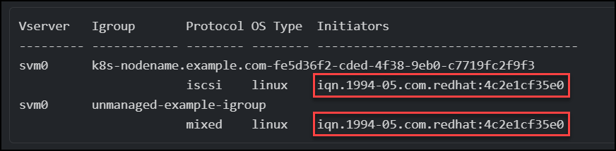

Release notes
Release notes
Import volumes
 Suggest changes
Suggest changes
You can import existing storage volumes as a Kubernetes PV using tridentctl import.
Overview and considerations
You might import a volume into Astra Trident to:
-
Containerize an application and reuse its existing data set
-
Use a clone of a data set for an ephemeral application
-
Rebuild a failed Kubernetes cluster
-
Migrate application data during disaster recovery
Before importing a volume, review the following considerations.
-
Astra Trident can import RW (read-write) type ONTAP volumes only. DP (data protection) type volumes are SnapMirror destination volumes. You should break the mirror relationship before importing the volume into Astra Trident.
-
We suggest importing volumes without active connections. To import an actively-used volume, clone the volume and then perform the import.

This is especially important for block volumes as Kubernetes would be unaware of the previous connection and could easily attach an active volume to a pod. This can result in data corruption. -
Though
StorageClassmust be specified on a PVC, Astra Trident does not use this parameter during import. Storage classes are used during volume creation to select from available pools based on storage characteristics. Because the volume already exists, no pool selection is required during import. Therefore, the import will not fail even if the volume exists on a backend or pool that does not match the storage class specified in the PVC. -
The existing volume size is determined and set in the PVC. After the volume is imported by the storage driver, the PV is created with a ClaimRef to the PVC.
-
The reclaim policy is initially set to
retainin the PV. After Kubernetes successfully binds the PVC and PV, the reclaim policy is updated to match the reclaim policy of the Storage Class. -
If the reclaim policy of the Storage Class is
delete, the storage volume will be deleted when the PV is deleted.
-
-
By default, Astra Trident manages the PVC and renames the FlexVol and LUN on the backend. You can pass the
--no-manageflag to import an unmanaged volume. If you use--no-manage, Astra Trident does not perform any additional operations on the PVC or PV for the lifecycle of the objects. The storage volume is not deleted when the PV is deleted and other operations such as volume clone and volume resize are also ignored.
This option is useful if you want to use Kubernetes for containerized workloads but otherwise want to manage the lifecycle of the storage volume outside of Kubernetes. -
An annotation is added to the PVC and PV that serves a dual purpose of indicating that the volume was imported and if the PVC and PV are managed. This annotation should not be modified or removed.
Import a volume
You can use tridentctl import to import a volume.
-
Create the Persistent Volume Claim (PVC) file (for example,
pvc.yaml) that will be used to create the PVC. The PVC file should includename,namespace,accessModes, andstorageClassName. Optionally, you can specifyunixPermissionsin your PVC definition.The following is an example of a minimum specification:
kind: PersistentVolumeClaim apiVersion: v1 metadata: name: my_claim namespace: my_namespace spec: accessModes: - ReadWriteOnce storageClassName: my_storage_class
Don't include additional parameters such as PV name or volume size. This can cause the import command to fail. -
Use the
tridentctl importcommand to specify the name of the Astra Trident backend containing the volume and the name that uniquely identifies the volume on the storage (for example: ONTAP FlexVol, Element Volume, Cloud Volumes Service path). The-fargument is required to specify the path to the PVC file.tridentctl import volume <backendName> <volumeName> -f <path-to-pvc-file>
Examples
Review the following volume import examples for supported drivers.
ONTAP NAS and ONTAP NAS FlexGroup
Astra Trident supports volume import using the ontap-nas and ontap-nas-flexgroup drivers.

|
|
Each volume created with the ontap-nas driver is a FlexVol on the ONTAP cluster. Importing FlexVols with the ontap-nas driver works the same. A FlexVol that already exists on an ONTAP cluster can be imported as a ontap-nas PVC. Similarly, FlexGroup vols can be imported as ontap-nas-flexgroup PVCs.
The following show an example of a managed volume and an unmanaged volume import.
The following example imports a volume named managed_volume on a backend named ontap_nas:
tridentctl import volume ontap_nas managed_volume -f <path-to-pvc-file> +------------------------------------------+---------+---------------+----------+--------------------------------------+--------+---------+ | NAME | SIZE | STORAGE CLASS | PROTOCOL | BACKEND UUID | STATE | MANAGED | +------------------------------------------+---------+---------------+----------+--------------------------------------+--------+---------+ | pvc-bf5ad463-afbb-11e9-8d9f-5254004dfdb7 | 1.0 GiB | standard | file | c5a6f6a4-b052-423b-80d4-8fb491a14a22 | online | true | +------------------------------------------+---------+---------------+----------+--------------------------------------+--------+---------+
When using the --no-manage argument, Astra Trident does not rename the volume.
The following example imports unmanaged_volume on the ontap_nas backend:
tridentctl import volume nas_blog unmanaged_volume -f <path-to-pvc-file> --no-manage +------------------------------------------+---------+---------------+----------+--------------------------------------+--------+---------+ | NAME | SIZE | STORAGE CLASS | PROTOCOL | BACKEND UUID | STATE | MANAGED | +------------------------------------------+---------+---------------+----------+--------------------------------------+--------+---------+ | pvc-df07d542-afbc-11e9-8d9f-5254004dfdb7 | 1.0 GiB | standard | file | c5a6f6a4-b052-423b-80d4-8fb491a14a22 | online | false | +------------------------------------------+---------+---------------+----------+--------------------------------------+--------+---------+
ONTAP SAN
Astra Trident supports volume import using the ontap-san driver. Volume import is not supported using the ontap-san-economy driver.
Astra Trident can import ONTAP SAN FlexVols that contain a single LUN. This is consistent with the ontap-san driver, which creates a FlexVol for each PVC and a LUN within the FlexVol. Astra Trident imports the FlexVol and associates it with the PVC definition.
The following show an example of a managed volume and an unmanaged volume import.
For managed volumes, Astra Trident renames the FlexVol to the pvc-<uuid> format and the LUN within the FlexVol to lun0.
The following example imports the ontap-san-managed FlexVol that is present on the ontap_san_default backend:
tridentctl import volume ontapsan_san_default ontap-san-managed -f pvc-basic-import.yaml -n trident -d +------------------------------------------+--------+---------------+----------+--------------------------------------+--------+---------+ | NAME | SIZE | STORAGE CLASS | PROTOCOL | BACKEND UUID | STATE | MANAGED | +------------------------------------------+--------+---------------+----------+--------------------------------------+--------+---------+ | pvc-d6ee4f54-4e40-4454-92fd-d00fc228d74a | 20 MiB | basic | block | cd394786-ddd5-4470-adc3-10c5ce4ca757 | online | true | +------------------------------------------+--------+---------------+----------+--------------------------------------+--------+---------+
The following example imports unmanaged_example_volume on the ontap_san backend:
tridentctl import volume -n trident san_blog unmanaged_example_volume -f pvc-import.yaml --no-manage +------------------------------------------+---------+---------------+----------+--------------------------------------+--------+---------+ | NAME | SIZE | STORAGE CLASS | PROTOCOL | BACKEND UUID | STATE | MANAGED | +------------------------------------------+---------+---------------+----------+--------------------------------------+--------+---------+ | pvc-1fc999c9-ce8c-459c-82e4-ed4380a4b228 | 1.0 GiB | san-blog | block | e3275890-7d80-4af6-90cc-c7a0759f555a | online | false | +------------------------------------------+---------+---------------+----------+--------------------------------------+--------+---------+
|
|
If you have LUNS mapped to igroups that share an IQN with a Kubernetes node IQN, as shown in the following example, you will receive the error:  |
Element
Astra Trident supports NetApp Element software and NetApp HCI volume import using the solidfire-san driver.
|
|
The Element driver supports duplicate volume names. However, Astra Trident returns an error if there are duplicate volume names. As a workaround, clone the volume, provide a unique volume name, and import the cloned volume. |
The following example imports an element-managed volume on backend element_default.
tridentctl import volume element_default element-managed -f pvc-basic-import.yaml -n trident -d +------------------------------------------+--------+---------------+----------+--------------------------------------+--------+---------+ | NAME | SIZE | STORAGE CLASS | PROTOCOL | BACKEND UUID | STATE | MANAGED | +------------------------------------------+--------+---------------+----------+--------------------------------------+--------+---------+ | pvc-970ce1ca-2096-4ecd-8545-ac7edc24a8fe | 10 GiB | basic-element | block | d3ba047a-ea0b-43f9-9c42-e38e58301c49 | online | true | +------------------------------------------+--------+---------------+----------+--------------------------------------+--------+---------+
Google Cloud Platform
Astra Trident supports volume import using the gcp-cvs driver.
|
|
To import a volume backed by the NetApp Cloud Volumes Service in Google Cloud Platform, identify the volume by its volume path. The volume path is the portion of the volume's export path after the :/. For example, if the export path is 10.0.0.1:/adroit-jolly-swift, the volume path is adroit-jolly-swift.
|
The following example imports a gcp-cvs volume on backend gcpcvs_YEppr with the volume path of adroit-jolly-swift.
tridentctl import volume gcpcvs_YEppr adroit-jolly-swift -f <path-to-pvc-file> -n trident +------------------------------------------+--------+---------------+----------+--------------------------------------+--------+---------+ | NAME | SIZE | STORAGE CLASS | PROTOCOL | BACKEND UUID | STATE | MANAGED | +------------------------------------------+--------+---------------+----------+--------------------------------------+--------+---------+ | pvc-a46ccab7-44aa-4433-94b1-e47fc8c0fa55 | 93 GiB | gcp-storage | file | e1a6e65b-299e-4568-ad05-4f0a105c888f | online | true | +------------------------------------------+--------+---------------+----------+--------------------------------------+--------+---------+
Azure NetApp Files
Astra Trident supports volume import using the azure-netapp-files driver.
|
|
To import an Azure NetApp Files volume, identify the volume by its volume path. The volume path is the portion of the volume's export path after the :/. For example, if the mount path is 10.0.0.2:/importvol1, the volume path is importvol1.
|
The following example imports an azure-netapp-files volume on backend azurenetappfiles_40517 with the volume path importvol1.
tridentctl import volume azurenetappfiles_40517 importvol1 -f <path-to-pvc-file> -n trident +------------------------------------------+---------+---------------+----------+--------------------------------------+--------+---------+ | NAME | SIZE | STORAGE CLASS | PROTOCOL | BACKEND UUID | STATE | MANAGED | +------------------------------------------+---------+---------------+----------+--------------------------------------+--------+---------+ | pvc-0ee95d60-fd5c-448d-b505-b72901b3a4ab | 100 GiB | anf-storage | file | 1c01274f-d94b-44a3-98a3-04c953c9a51e | online | true | +------------------------------------------+---------+---------------+----------+--------------------------------------+--------+---------+